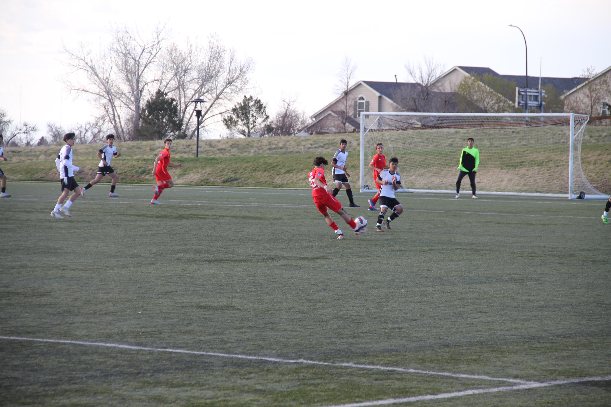

First days of soccer...
I started to play soccer in the early ages of my life. I started to play soccer when I was three years old and have been playing ever since. I fell in love early on and I still love soccer to this day. I have been playing soccer for 13 years and I would never look back on another sport.

My dad was the one that got me into soccer. he played with me every single day when I was young and he was even my coach for a few seasons when I was 3-6. My dad was on the U.S under 18 national team, which was very hard to get to and a major achevement. His position was as goalkeeper.